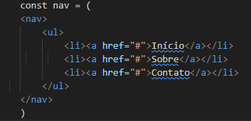
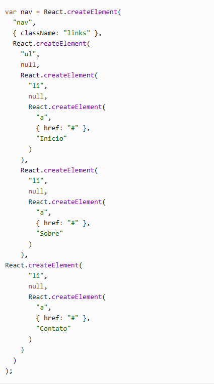

Criado pela equipe de desenvolvimento do React, o JSX é uma forma de criar elementos para serem utilizadas como templates de aplicações React. Basicamente, os elementos criados com o JSX são bem similares com código HTML e fornecem aos desenvolvedores uma forma mais simples e intuitiva de criar os componentes de uma aplicação. Porém, apesar de muito similar ao HTML, o JSX não é interpretado pelo navegador. Por este motivo, deve-se utilizar um “transpilador” para essa conversão. Atualmente, o mais conhecido deles é o Babel.
Como dito anteriormente, o JSX possui uma sintaxe muito semelhante ao HTML. O código abaixo demonstra claramente esta característica. Apesar de muito parecido, o código a seguir não é HTML e sim um trecho de código JSX. 
Porém, como dito acima, este código não conseguirá ser lido pelo navegador, e é papel do “transpilador” convertê-lo para a sintaxe do React. Sendo assim, o código acima será “transpilado” para o seguinte código: 
Todo este processo facilita a criação de aplicações React, já que é muito mais simples criar um código similar ao HTML do que vários elementos React. A partir daí, é papel do React exibir a estrutura no navegador.